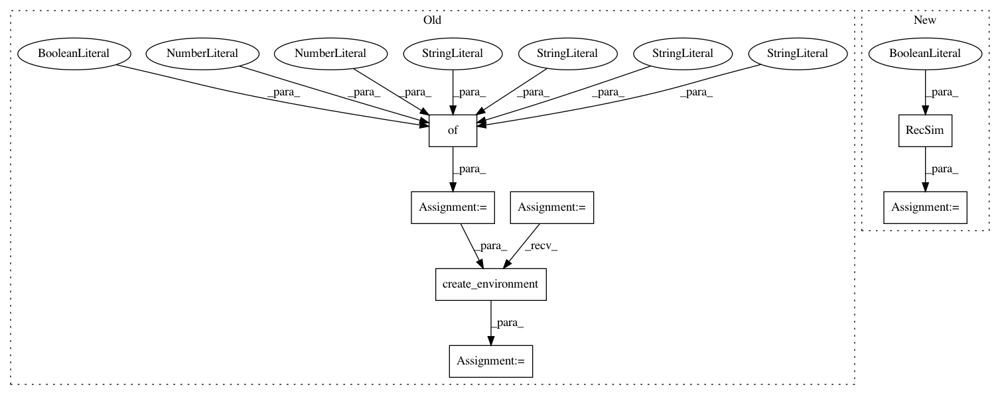

bbbb4282d5c5f8d5766be6f2cf9444d35e78da4e,reagent/gym/tests/preprocessors/test_replay_buffer_inserters.py,TestRecSimReplayBufferInserter,test_recsim_interest_exploration,#TestRecSimReplayBufferInserter#,130
Before Change
@unittest.skipIf(not HAS_RECSIM, "RecSim not installed")
def test_recsim_interest_exploration(self):
num_candidate = 10
env_config = {
"num_candidates": num_candidate,
"slate_size": 3,
"resample_documents": False,
"seed": 1,
}
env = interest_exploration.create_environment(env_config)
replay_buffer, inserted = _create_replay_buffer_and_insert(env)
batch = replay_buffer.sample_transition_batch(indices=torch.tensor([0]))
npt.assert_array_almost_equal(
inserted[0]["observation"]["user"].astype(np.float32),
After Change
def test_recsim_interest_exploration(self):
num_candidate = 10
slate_size = 3
env = RecSim(
num_candidates=num_candidate,
slate_size=slate_size,
resample_documents=False,
is_interest_exploration=True,
)
replay_buffer, inserted = _create_replay_buffer_and_insert(env)
batch = replay_buffer.sample_transition_batch(indices=torch.tensor([0]))
npt.assert_array_almost_equal(
inserted[0]["observation"]["user"].astype(np.float32),
In pattern: SUPERPATTERN
Frequency: 3
Non-data size: 7
Instances
Project Name: facebookresearch/Horizon
Commit Name: bbbb4282d5c5f8d5766be6f2cf9444d35e78da4e
Time: 2020-07-15
Author: kaiwenw@fb.com
File Name: reagent/gym/tests/preprocessors/test_replay_buffer_inserters.py
Class Name: TestRecSimReplayBufferInserter
Method Name: test_recsim_interest_exploration
Project Name: facebookresearch/Horizon
Commit Name: bbbb4282d5c5f8d5766be6f2cf9444d35e78da4e
Time: 2020-07-15
Author: kaiwenw@fb.com
File Name: reagent/test/replay_memory/create_from_env_test.py
Class Name: CreateFromEnvTest
Method Name: test_create_from_recsim_interest_exploration
Project Name: facebookresearch/Horizon
Commit Name: bbbb4282d5c5f8d5766be6f2cf9444d35e78da4e
Time: 2020-07-15
Author: kaiwenw@fb.com
File Name: reagent/gym/tests/preprocessors/test_replay_buffer_inserters.py
Class Name: TestRecSimReplayBufferInserter
Method Name: test_recsim_interest_evolution